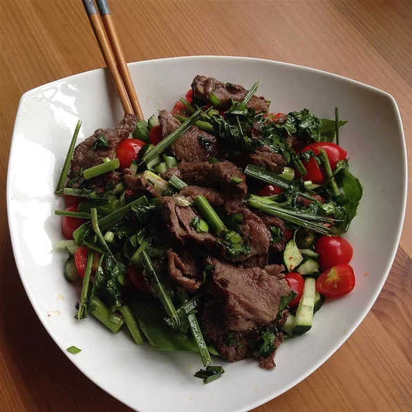

Thai Beef Salad

Description
A colorful, tangy salad that brings out the best in Thai cuisine and
spices.
Ingredients
- 2 green onions, chopped
- 1 lemon grass, cut into 1 inch pieces
- 1 cup chopped fresh cilantro
- 1 cup chopped fresh mint leaves
- 1 cup lime juice
- ⅓ cup fish sauce
- 1 tablespoon sweet chili sauce
- ½ cup white sugar
- 1 ½ pounds (1 inch thick) steak fillet
-
1 head leaf lettuce - rinsed, dried and torn into bite-size pieces
- ½ English cucumber, diced
- 1 pint cherry tomatoes
Steps
-
In a large bowl, stir together the green onions, lemon grass, cilantro,
mint leaves, lime juice, fish sauce, chili sauce and sugar until well
combined and the sugar is dissolved. Adjust the flavor, if desired, by
adding more sugar and/or fish sauce. Set aside.
-
Cook the steak over high heat on a preheated grill for approximately 4-6
minutes on each side, until it is cooked medium. Do not overcook the
meat! Remove from heat and slice into thin strips. Add the meat and its
juices to the sauce and refrigerate, tightly covered, for at least 3
hours.
-
Tear the lettuce into bite size pieces and place in a salad bowl.
Arrange the cucumber on top of the lettuce, and then pour the meat and
sauce over. Top with the cherry tomatoes and garnish with fresh cilantro
leaves.